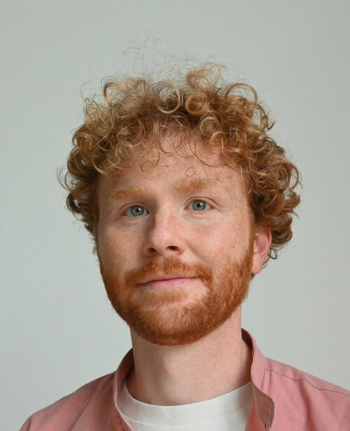

A consulting practice founded to support small and medium organisations, profit and non, with AI adoption. The working approach is grounded on human sustainability and translates it into strategy, organisational diagnosis and change management.
AI is creating real operational value and customer expectations are shifting fast. But adopting AI well at organisational scale, in a way that accounts for the impact on people and quality of work, is a challenge most organisations are still figuring out.
People are using AI tools on their own initiative, whether or not the organisation has taken an official decision. This creates regulatory exposure (EU AI Act and GDPR) on data processing, transparency and risk classification.
Effective adoption needs shared rules: when to use AI tools, when to trust their output and how to ensure people stay in control of decisions. Quality standards for AI-assisted work need to be defined and enforced.
A coordinated approach to AI adoption requires a significant investment of time and money, to learn, experiment, build, deploy and maintain. And has a lot at stake: employee engagement, operational quality, client trust.
A successful adoption depends on people engaging with the change. As workflows, workloads and skills evolve, the organisation's long term capacity depends on whether its people grow with the technology.
Organisations need a realistic view on what benefits, costs, risks and change plan. This should be grounded on the specific organisation reality and vision, and cannot leave change management as an afterthought.
AI adoption requires regulatory compliance, significant investment and careful attention to the people doing the work. It should happen by design, not by accident.
Most AI consultancies focus on the technology and treat the impact on people as a problem to manage, not the objective of the work. Human susy starts from the people: how can their work be improved? How can their capabilities grow to strengthen the organisation? How can they be involved in the decisions affecting their work? These are the questions that determine whether a transformation delivers lasting value or stalls after the pilot. This approach is grounded in the concept of human sustainability and built on a library of documented AI adoption cases across industries, studying what worked, what did not, and why.
Every engagement starts with understanding the specific context: how is AI used in the organisation, how are people experiencing it, and what is the goal of the adoption. From that understanding, I design an action plan that fits the scale of the organisation, its culture and operational reality. The work draws on operational transformation, change management and AI adoption methodology, and it always stays concrete and outcome driven.
A structured assessment of the organisation across three dimensions: processes, data and people. Whether AI adoption is being planned, is underway or has been deployed, the goal is to understand how the three dimensions interact and where the real opportunities and risks are.
Building the judgment, boundaries and practices that enable teams to work with AI effectively and sustainably. Content and format are adapted to the audience and they can be provided both in-person or remote.
It starts from the findings of the diagnostics and it includes strategy design and support on design, deployment and change management.

Simone Solazzo
Based in Eindhoven, Netherlands
I hold a Master of Science in Management Engineering from Politecnico di Milano and spent a decade across management consulting and technology operations. At sennder, a fast-scaling logistics technology company, I led the operational excellence function at director level, designing and running technology-driven transformations across European operations.
I founded human susy to research and build methodologies for human sustainable AI adoption, and to guide organisations through the transformation.
Budget decisions for 2027 are being shaped now. If AI adoption should be part of those plans, the groundwork needs to happen in Q4 2026.
A first conversation takes 30 minutes. I want to understand your situation and whether there is a fit.